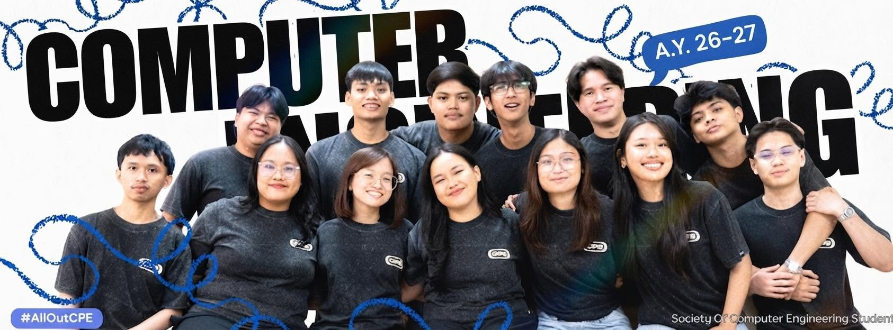
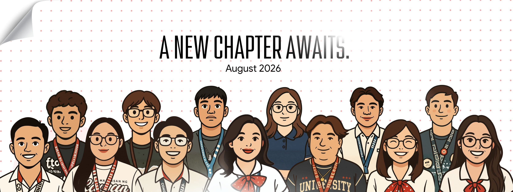
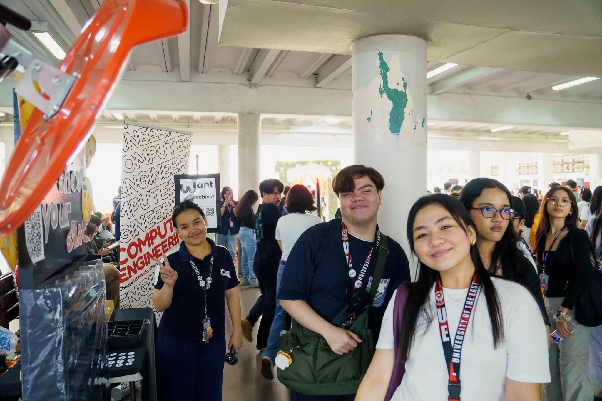

Society of Computer Engineering Students of University of the East Manila.

The Society of Computer Engineering Students (SCPES) is the official student organization for computer engineering majors at the University of the East Manila, dedicated to representing the student body and fostering academic, technical, and professional growth. Operating under the UE College of Engineering, SCPES organizes technical workshops, seminars, and networking events covering hardware design, embedded systems, software development, and networking. Through its alignment with national organizations like the Institute of Computer Engineers of the Philippines (ICpEP), the society bridges students with faculty, alumni, and industry partners while actively engaging members in inter-university competitions, hackathons, and community-building activities.
The Society of Computer Engineering Students (SCPES) aims to enhance its members' technical and professional competence by providing hands-on workshops, bootcamps, and career exposure in key fields like embedded systems, software development, and networking. Through its connection with national bodies like ICpEP.SE, SCPES connects students with industry professionals, alumni, and peer networks while supporting academic excellence through mentorship and competition prep. Ultimately, the organization serves as the official student voice to university administration, cultivates leadership and ethical standards through student governance, and builds a collaborative, supportive community across all year levels.

The Society of Computer Engineering Students (SCPES) engages its members through a diverse mix of technical workshops, community events, and competitive opportunities throughout the academic year. Its flagship programs include hands-on hardware and IoT bootcamps using platforms like Arduino and ESP32, as well as software development seminars on tools like Git and Figma. SCPES also organizes welcoming initiatives like the Freshmen Huddle, hosts coding marathons and quiz bowls during College of Engineering Week, and builds inter-year camaraderie through general assemblies and sportsfests

Computer engineering students at UE Manila can get involved with SCPES by registering during the annual semester recruitment drives, which grants full access to technical workshops, study groups, and community events. Members looking for hands-on leadership experience can join specialized sub-committees—such as Creatives, Logistics, Academic Affairs, and Technical Projects—or run for officer positions and year-level representative seats during annual elections. Students can also represent the university by trying out for official quiz bowl and hackathon contingents, volunteering as peer tutors or workshop facilitators, or serving as freshman batch ambassadors.
The Society of Computer Engineering Students (SCPES) at UE Manila has built a strong record of technical, academic, and institutional accomplishments. The organization regularly fields successful student contingents to regional and national ICpEP.SE conventions, securing top placements in hardware design challenges, programming marathons, and academic quiz bowls. Beyond external competitions and hackathons like PacketHacks, SCPES consistently drives skill building on campus through hands-on bootcamps in IoT, embedded systems, and software engineering. Furthermore, the society regularly produces Latin honor graduates and College of Engineering leadership awardees, earning consistent recognition from the university administration for its impactful student welfare programs and active contribution to campus life.
SCPES bootcamps and competitions feed directly into student work—take a look at the showcase.